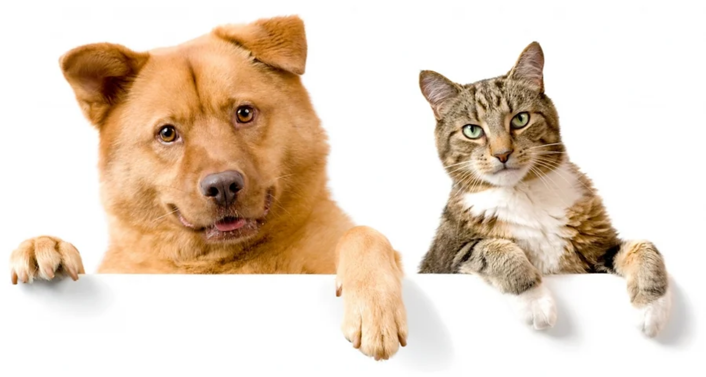

Conheça a ONG Azul
Trabalhando para um futuro melhor para cães e gatos
O que ela faz por você
1. Cria um sistema de verificação capcha para novos membros garantirem que não são robôs
2. Possui um sistema de banimento automático para links suspeitos que forem enviados na comunidade
3. Sistema de avisos e banimento manual, para pessoas administradoras utilizarem